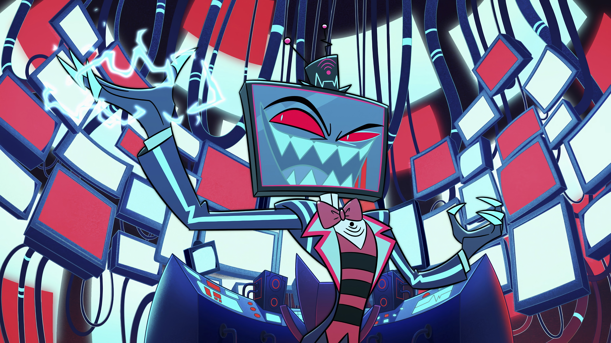
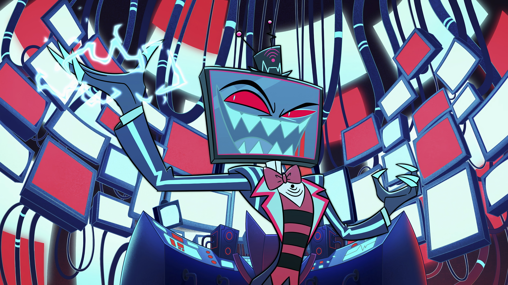

⛧ Vox je hlavním záporákem Hazbin Hotelu. Je mocným Overlordem a zakladatel, CEO a tvář VoxTek Enterprises. Zároveň je samozvaným vůdcem záporácké trojice The Vees, kde je společně s Velvette a Valentinem. S Valentinem má také velmi casual romantický/sexuální vztah. Za života byl původně moderátorem předpovědi počasí, ale poté začal vraždit své kolegy a soky, aby se vyšplhal výše. Nakonec utvořil kult založený na televizním zábavním průmyslu. Zemřel, když mu upadla televize na hlavu a on schytal smrtelnou ránu elektrickým proudem (proto má místo hlavy televizi hehe). Jeho sebestředné cult-leader tendence mu vydržely i po smrti. V Pekle se snaží stát absolutním vládcem a poštvat všechny ostatní proti Luciferovi a Alastorovi. Jeho konflikt s Alastorem je důležitá součást jeho osobnosti. Před lety Alastora obdivoval a toužil s ním spolupracovat. Alastor však odmítl, čímž Voxe velmi urazil a naštval, a tak se z nich stali úhlavní nepřátelé. Konflikt rádia (Alastor) a televize (Vox) tedy prochází celý seriál a písnička Stayed Gone je pro to krásně ilustrační.
⛧ Je to můj oblíbený záporák + Christian Borle mu propůjčuje naprosto geniální hlas a energii :3
⛧ Více informací zde!